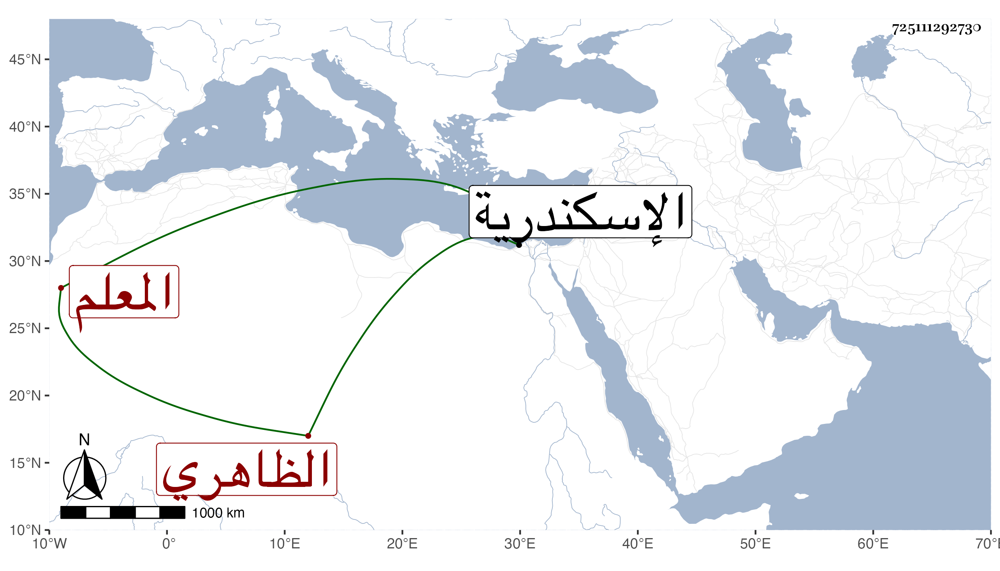

0902Sakhawi.DawLamic.ITO20230111-ara1.EIS1600.725111292730
Biography ID: 725111292730
1032
الطنبغا الظاهري برقوق المعلم ويعرف باللفاف أقام دهرا خاملا ثم صار في الأيام الأشرفية جملة معلمي الرمح فلما كانت الوقعة بين السلطان وقرقماس الشعباني أصابته جراحات بل وتقطر عن فرسه فعرف له السلطان ذلك وأنعم عليه بإقطاع قلمطاي الإسحاقي الأشرفي الخاصكي ثم بأمرة عشرة زيادة على ذلك بعد نفي سودون المغربي ثم زاده أمرة طبلخاناه عقب نفي أقطوه المساوي أيضا ثم عمله نائب الاسكندرية مدة ثم صيره بعد موت تمرباي رأس نوبة النوب أحد المقدمين ، إلى أن ضعف وكاد يختلط فاستعفي ولزم بيته يسيرا ثم مات في عاشر ربيع الثاني سنة ست وخمسين ، وكان خيرا عاقلا سليم الباطن جدا رأسا في لعب الرمح عريا عن التدبير والرأي رحمه الله .
